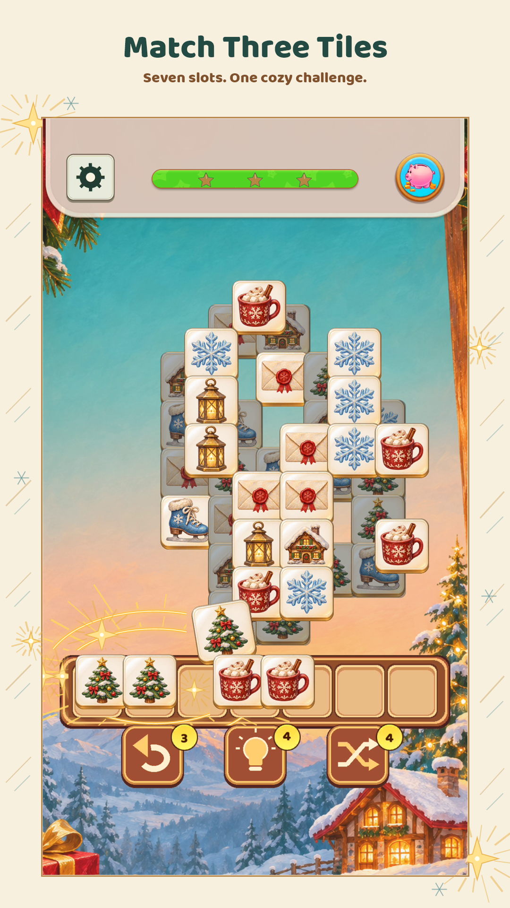
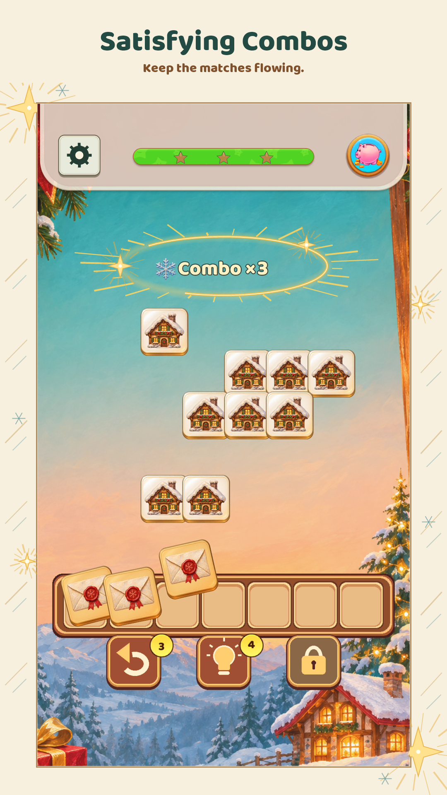
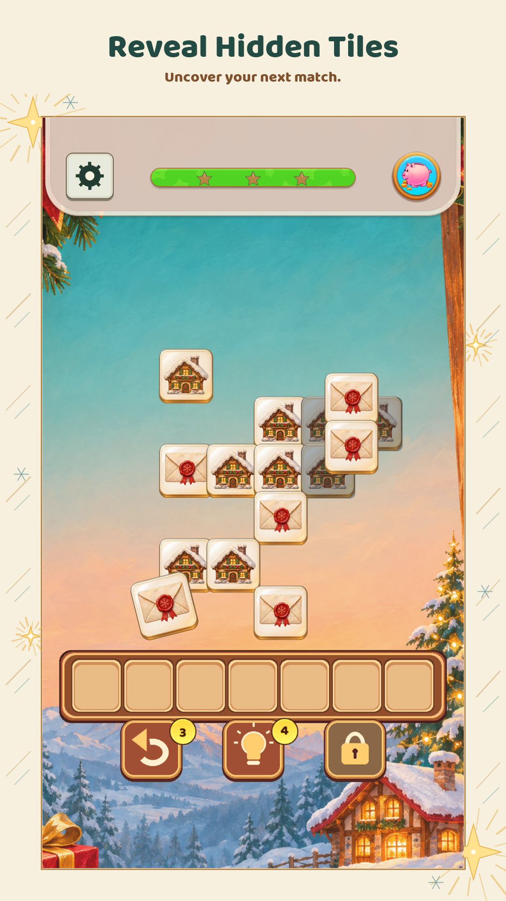
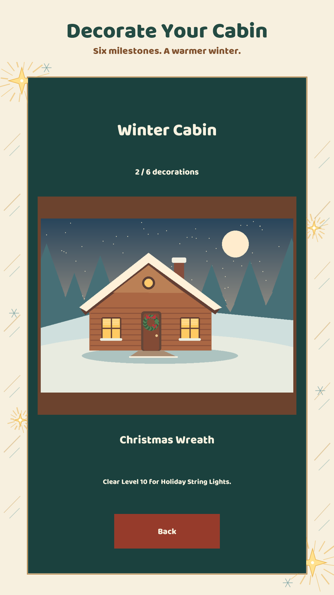
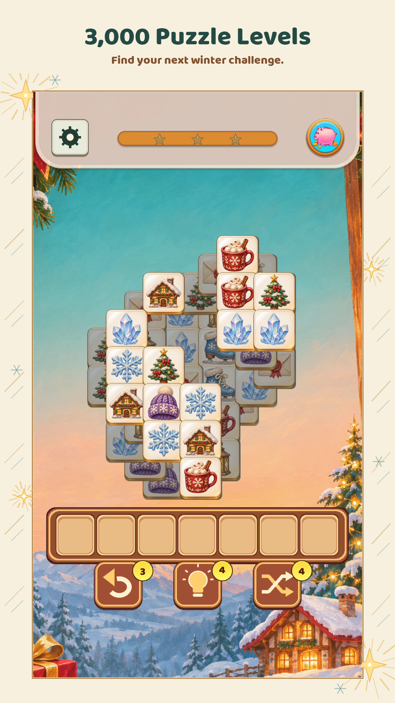
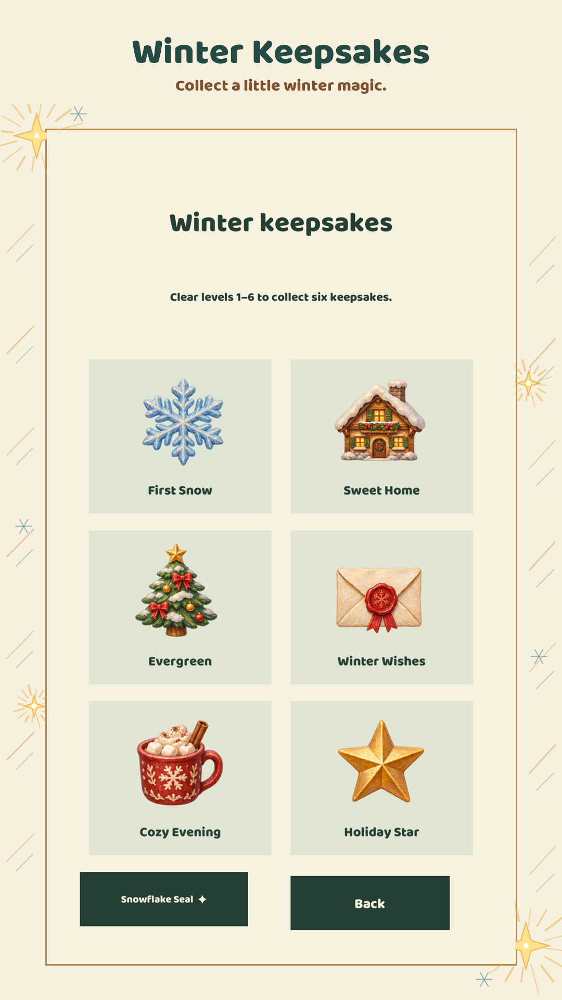
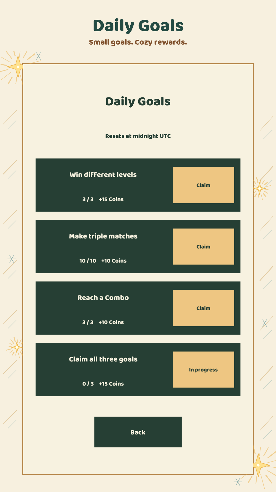
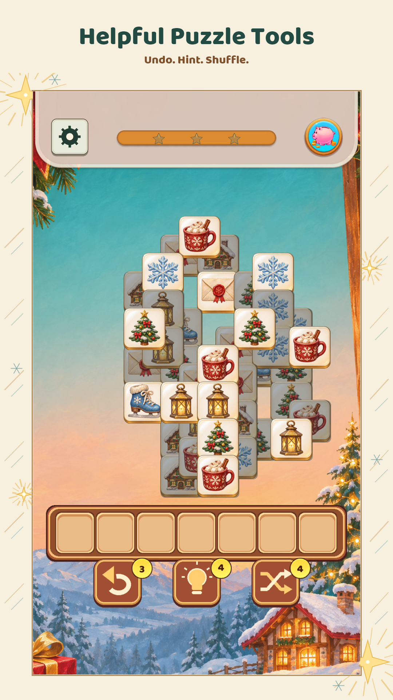

3,000 puzzle levels
Start with simple matches, then explore layered boards and different tile arrangements. Build consecutive-match combos as you play.
An independent Android puzzle game
Previously listed as Winter Atelier. Same Google Play package and download link.
A little puzzle.
A little cabin to call your own.
Match three identical tiles, make room in your tray, and turn your puzzle progress into winter keepsakes and cabin decorations.
Get it on Google PlayAndroid · Free to download · Contains ads
See the store for current availability and purchase disclosures.

Find a match. Make a little space.
Tap selectable tiles to move them into your holding tray. Three identical tiles clear together. Keep matching until you clear the board, while planning around the tray's seven slots and the tiles revealed underneath.
Start with simple matches, then explore layered boards and different tile arrangements. Build consecutive-match combos as you play.
Collect winter keepsakes and unlock decorations as you progress. Three daily goals give you something else to work toward.
Regular puzzles and progression do not require a game account or a continuous connection. Ads and external services have separate network needs.
These are the original eight store screenshots, in their existing order. No gameplay boards or tile artwork have been recreated for this page.







Tile Match: Cozy Cabin is free to download and contains ads, including optional rewarded offers. It is not an ad-free game. The US Google Play page also displays “In-Game Purchases (Includes Random Items)”. Current purchase availability and pricing have not been independently verified for this page; check the store and any in-game offer before proceeding.
For data practices and privacy choices, read the game's privacy policy and Google Play Data safety disclosure.
A few things you might want to know
It is a single-player Android tile-matching puzzle game. You collect three identical tiles in a seven-slot tray to clear them, work through layered boards, and decorate a winter cabin as you progress.
No. You tap selectable tiles into a tray rather than swapping adjacent pieces. Three identical tiles in the tray clear together. Choosing which tiles to take matters because the tray has seven slots.
Yes. Core puzzles and progression work offline. Advertising, opening external links and other online services need connectivity; offline play does not mean that every service works without a network.
It is free to download and contains ads, including optional rewarded offers. We do not describe it as ad-free or promise that all ads are optional. The US store also displays an in-game purchase label, including random items. Check the current store and in-game offers for availability and pricing.
No game account is required for regular gameplay.
The current public description lists 3,000 puzzle levels, alongside winter keepsakes, cabin decorations, seasonal visual themes and three daily goals.
Undo, Hint and Shuffle are available to help with puzzles. Check each in-game tool prompt for its current requirements or cost; this page does not promise unlimited tools or free refills.
Progress through puzzle levels to unlock decorations and collect winter keepsakes. Cabin decoration is part of the game's progression between puzzles.
This website page is in English. It does not certify all in-game language options. Check the current game settings and Google Play details for the languages available in your version.
Email service@gamebox.wiki with the game version, device model and a short description of what happened. A level number or screenshot can help. Please leave out passwords, payment details and other sensitive information. Honest criticism is welcome; a positive rating is never a condition of support.
I'm an independent solo developer. If you give Tile Match: Cozy Cabin a try, I'd love to know whether the tiles are easy to tell apart, whether the tray makes sense, and whether decorating the cabin makes you want to play another puzzle.
Tell me what felt good, what got in the way, or where you stopped. You don't need to write a review to send feedback. If you choose to leave a Google Play review, please make it an honest one.